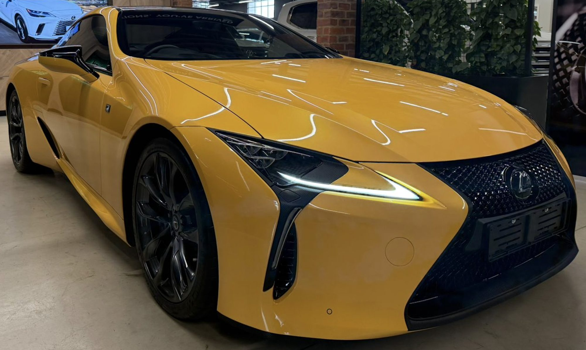

2017
Toyota City, Japan
Built
Assembled in the LC's first production year as a right-hand-drive car for South Africa, at the Motomachi plant that once built the LFA. Its order carried a hold on delivery.
Lexus South Africa vehicle record; Wikipedia.

The Lexus LC 500 that launched the model in South Africa, June 2017.
The LC 500 was Lexus showing off: a concept car put into production almost unchanged, with a naturally aspirated five-litre V8 that revs past 7 000 rpm. This one was built in Japan in May 2017, painted Naples Yellow over black, and flagged to be held from delivery. That June it was the car Lexus used to launch the LC to the South African press at Franschhoek.
It then spent nine years in Durban and Gauteng, never far from a Lexus workshop and rarely far from home. In October 2026, two months after Lexus built its last LC, it went to Cape Town.
Assembled in the LC's first production year as a right-hand-drive car for South Africa, at the Motomachi plant that once built the LFA. Its order carried a hold on delivery.
Lexus South Africa vehicle record; Wikipedia.
Lexus South Africa introduced the LC 500 to the motoring press at the Franschhoek Motor Museum in June 2017, from R1 729 600. This was the launch car.
Confirmed by Halfway Lexus Pretoria, October 2026. Launch coverage: Cars.co.za, TimesLive.

Sold new by Lexus Kingsmead on 24 August 2017 and registered in KwaZulu-Natal. Three years on it had covered barely 7 300 km, every one of them serviced by Lexus.
The car moved north and ended up with a collector who keeps his cars at Halfway Lexus Pretoria, alongside Lamborghinis, Ferraris and several one-off Lexus models. He kept it under extended warranty and drove it about 1 300 km a year. The chrome was blacked out along the way.
Lexus South Africa had already dropped the LC by early 2024, and in August 2026 Lexus ended production worldwide. In October the collector agreed to let this one go. A buyer in Cape Town, who had set out to find a sports car for under a million rand, signed for it within a day. Another dealer was trying to secure it for his own client that same morning.
Covered transport south, the handover, and the first drive.
Everything that matters here is unrepeatable: a discontinued model, the last of Lexus's atmospheric V8s, tiny local numbers, and on top of that the launch car itself, in the launch colour, with under 20 000 km and an unbroken Lexus service history.
So far most LCs have depreciated like any luxury GT. A low-mileage 2018 LC 500h sold at auction in the US in July 2026 for about two-thirds of its price new. Collector premiums go to the V8 cars, the special editions and the cars with a story. This one has two of the three.
Sources: TimesLive (2017 allocation) · Cars.co.za, January 2024 · Lexus Enthusiast · TFLcar · autoevolution, July 2026
As Lexus South Africa has it on record.
URZ100R-ACUBHQ5C1 Naples YellowFA20 Black2UR-GSE 5.0 V8, 351 kW, 540 NmX4803 X7391 X7392Halfway Lexus Pretoria, October 2026.


Other Naples Yellow LCs, from Lexus and the motoring press. None of these is this car.


The last three show the 2019 LC Yellow Edition, a limited run with a white and yellow cabin. Photographs belong to their owners.
Nine years, under 20 000 km, every service at a Lexus dealer.